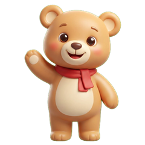

H Learn
Per bambini da 2 a 5 anni. I giochi usano immagini grandi, poche scelte alla volta e una voce che guida il bambino.
No. Dopo l'installazione tutti i giochi funzionano anche senza connessione, per esempio in auto o in aereo.
No. Non ci sono account, pubblicità o statistiche e non chiediamo il nome del bambino. Quello che l'app ricorda resta solo sul dispositivo. Leggi la privacy.
"Bambino o bambina" serve solo per la grammatica italiana della voce ("Bravo!" o "Brava!"). I paesi (facoltativi) servono al gioco delle bandiere, per mostrare prima le bandiere più vicine alla vostra famiglia. Tutto resta sul dispositivo.
No, mai.
Animali, Colori, Mestieri e Numeri sono gratuiti. Gli altri giochi (con la corona dorata) si sbloccano con un acquisto.
Tocca un gioco con la corona. Prima di acquistare, l'app chiede di scrivere il risultato di una moltiplicazione: è una "domanda per i genitori", così i bambini non possono fare acquisti o uscire dall'app per sbaglio.
Usa lo stesso account Apple o Google con cui hai acquistato e tocca "Ripristina acquisti" nelle impostazioni per i genitori. Non devi pagare di nuovo.
Tocca l'ingranaggio in alto a destra, rispondi alla domanda per i genitori e scegli "Azzera i dati di gioco". Gli acquisti non vengono cancellati.
Italiano e inglese. Puoi cambiare lingua quando vuoi nelle impostazioni per i genitori.
Controlla il volume e, su iPhone, l'interruttore del silenzioso sul lato del telefono. Se il problema resta, chiudi e riapri l'app, poi scrivici.
Le immagini sono create per H Learn. Le voci sono voci sintetiche di Microsoft Azure con licenza. Alcuni versi degli animali sono registrazioni reali con licenza Creative Commons: i crediti sono nelle impostazioni per i genitori.
Hai un problema, una domanda o un'idea per un nuovo gioco? Scrivici, rispondiamo di solito entro pochi giorni.
For children aged 2 to 5. The games use big pictures, few choices at a time and a voice that guides the child.
No. After installing, all games work offline, for example in the car or on a plane.
No. There are no accounts, no ads and no analytics, and we never ask for the child's name. What the app remembers stays on the device only. Read the privacy policy.
"Boy or girl" is only for Italian grammar in the voice ("Bravo!" or "Brava!"). The countries (optional) are for the flags game, to show the flags closest to your family first. Everything stays on the device.
No, never.
Animals, Colours, Jobs and Numbers are free. The other games (with the golden crown) are unlocked with a purchase.
Tap a game with a crown. Before buying, the app asks you to type the result of a multiplication: it is a "parent check", so children can't make purchases or leave the app by accident.
Use the same Apple or Google account you bought with and tap "Restore purchases" in the parent settings. You don't pay again.
Tap the gear in the top right corner, answer the parent check and choose "Reset game data". Purchases are not deleted.
Italian and English. You can change the language at any time in the parent settings.
Check the volume and, on iPhone, the silent switch on the side of the phone. If it still doesn't work, close and reopen the app, then write to us.
The pictures were created for H Learn. The voices are licensed synthetic voices from Microsoft Azure. Some animal sounds are real recordings under Creative Commons licences: the credits are in the parent settings.
Have a problem, a question or an idea for a new game? Write to us, we usually reply within a few days.